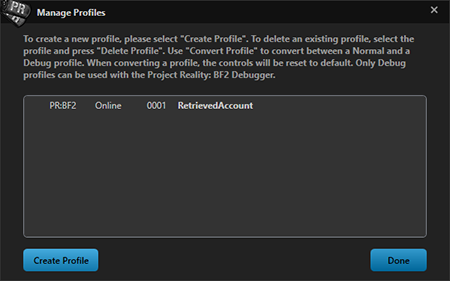
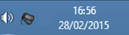

Set-Up
Requisitos do Sistema
- Sistema operacional: Windows 7, 8 ou 10
- Processador: mínimo de 2.4 Ghz Dual-Core. 3,2 Ghz Recomendado
- Memória: 3 GB de RAM. 4 GB recomendado
- Disco Rígido: 10 GB de espaço livre no Disco Rígido
- Adaptador gráfico: Placa gráfica com 128 MB de RAM. 512 MB recomendados.
- Som: Dispositivo de som compatível com DirectX 9. Placa de som dedicada com suporte EAX recomendada para melhor experiência.
- Internet: 256 kbps ou conexão mais rápida necessária para jogar on-line
- Software: .NET Framework 4
- Entrada: Mouse, Teclado
- Opcional: Joystick, fone de ouvido, microfone (altamente recomendado para comunicação de voz )
Instalação do Jogo
Com o PR:BF2, não é mais necessário ter o Battlefield 2 instalado. PR:BF2 v1.3 e além funciona como um jogo standalone. Se você tem uma versão do PR:BF2 instalado, você precisará desinstalá-lo antes de instalar o PR:BF2 v1.7. Não há patch disponível e versão mais antiga para v1.3!
Você precisa baixar o instalador completo do PR:BF2 em nosso site. Não será necessário ter o Battlefield 2 instalado.
Download Full PR:BF2 v1.7 Installer
Existem 2 métodos de instalação. Você pode usar o aplicativo Assistente de Download, o que torna muito mais fácil instalar o PR:BF2 ou você pode baixar e instalar manualmente o Instalador através de um Torrent. Com ambos os métodos, existem 2 etapas: Download e instalação:
1) Download
O Assistente de Download baixará o Instalador usando o protocolo Torrent. Portanto, verifique se isso não está bloqueado pelo seu provedor. Simplesmente baixe o Download Assistant do nosso PR:BF2 Download Section e siga as instruções no aplicativo. Se você estiver em uma versão recente do Windows, ele oferecerá um simples botão para iniciar o instalador. Se você estiver em uma versão mais antiga do Windows, não será. Então você será solicitado a ir para a Etapa 2 e seguir as instruções para instalar o PR:BF2.
Se você baixou a versão Torrent (e agora o Download Assistant ), esta NÃO é a instalação completa. Você deve usar o pequeno arquivo .torrent com um client BitTorrent para baixar o arquivo .iso completo. Nós recomendamos qBittorrent. Uma vez que você baixe tudo com o BitTorrent que você escolheu, você será presenteado com um arquivo "ISO" para passar para a etapa 2 depois que o aplicativo terminar o download.
2) Instalação
A pasta baixada que você tem agora através do Download Assistant ou do download manual do Torrent agora tem um arquivo setup.exe. Inicie este para iniciar o processo de instalação. O Download Assistant, no entanto, possui um sistema automatizado, portanto, após o download, deve haver um botão para iniciar a instalação automaticamente.
Mais alguns pontos:
Com a nova versão standalone, também não é mais necessário instalá-la na pasta Battlefield 2. Sinta-se à vontade para instalar o PR:BF2 em uma unidade e pasta de sua escolha. Se você tiver o BF2 instalado, poderá continuar a jogá-lo e jogar outras modificações do BF2 também. PR:BF2 não interfere com elas. PR:BF2 possui um um atualizador automático. Assim, depois de instalar o PR:BF2, você pode usar o atualizador para atualizar automaticamente seu jogo para versões mais recentes quando elas forem lançadas. PR:BF2 inclui PR Mumble em sua instalação. Portanto, não há necessidade de baixá-lo separadamente. Se você não quiser usar Torrents, encontrará downloads HTTP diretos em nossos fóruns.
Criando uma conta
Como a DICE e a EA removeram o suporte para BF2 em maio de 2014, agora usamos nosso próprio serviço de contas para PR:BF2. Todas as suas contas do BF2 antigas (antes de PR:BF2 v1.2) não podem mais ser recuperadas. Antes de usar o PR Launcher, você precisará criar uma conta no PR para jogar online. Esta conta é exclusiva para você. Jogar offline não requer uma conta no PR. Usamos serviços de terceiros para conectar e verificar uma conta do PR. Atualmente, só oferecemos suporte ao Steam. Você precisará ter uma conta Steam existente ou crie uma nova para se conectar à sua conta no PR. Ao iniciar o Project Reality:BF2 pela primeira vez, você verá a seguinte janela:

Pressione o botão de login do Steam para abrir uma página onde você precisará fazer login no Steam para continuar. O navegador solicitará que você permita que o PR Launcher faça o login. Dependendo do seu navegador, isso será semelhante às imagens abaixo. Pressione o botão para prosseguir. Depois, você pode fechar a página da web.

Será atribuído a sua conta do PR um nível. Este nível determina o quanto sua conta é considerada legítima e não uma conta descartável (conta fake). Os servidores têm a opção de escolher qual nível mínimo é necessário para jogar em seu servidor. Para determinar seu nível, sua conta Steam precisará ser tornada pública parcialmente. Você pode fazer isso nas configurações de privacidade da steam. Certifique-se de que as configurações de detalhes do jogo (game details) sejam públicas.

Seu perfil Steam não precisa permanecer público enquanto joga PR:BF2. Apenas ao calcular o nível da conta PR. Isso é feito uma vez automaticamente no primeiro login e depois apenas ao calcular manualmente. Você pode encontrar nossas notícias sobre privacidade aki. Se o nível da sua conta não for alto o suficiente para jogar na maioria dos servidores online, será mostrado um aviso na tela principal do PR Launcher, que se parece com a imagem abaixo.

Para recalcular o nível da sua conta do PR, vá para o menu SUPORTE e abra a guia Conta. Lá você pode encontrar um ID exclusivo para sua conta, bem como o nível atual da sua conta e um botão para calculá-lo novamente. Seu nível nunca pode ficar mais baixo após o cálculo. Você sempre manterá o nível que ja possui.
O nível da sua conta aumentará acumulando XP em alguns indicadores. Estes são, por exemplo, não ter banimento do Steam VAC, ter jogos comprados na loja do Steam em sua biblioteca e ter tempo de jogo nesses jogos. Doações para a equipe do Project Reality não influenciam o nível da sua conta.
Se você não deseja criar uma conta no PR para jogar online, você pode escolher jogar offline na tela de login inicial..
Criando um Perfil
Você tem uma única conta. No entanto, você pode criar vários perfis nesta conta do PR. Cada perfil possui um nome próprio no jogo, bem como configurações e controles separados salvos no seu computador. Você também pode recuperar perfis criados anteriormente. Perfis mais antigos criados após PR:BF2 v1.2 e antes de v1.6 também podem ser recuperados fornecendo o nome do perfil e a senha.
Você pode acessar as configurações do perfil passando o mouse sobre o botão Jogar no PR Launcher e escolhendo Selecionar perfil e, em seguida, Gerenciar perfis. Você também tem a opção de criar perfis offline. Se você não fez login através de sua conta PR online, você só pode criar e usar perfis offline.


O Launcher de PR
Após a instalação, um atalho para o Project Reality:BF2 será fornecido na área de trabalho, clique duas vezes neste ícone para abrir o PR Launcher.

Todas as opções principais são exibidas à direita.
- Jogar: Isso iniciará o jogo. Se você clicar na seta para baixo à direita, terá a opção de verificar atualizações ou selecionar um perfil diferente. Se houver uma atualização, ela será exibida automaticamente se você pressionar o botão de Jogar(Play). Essa atualização será baixada e instalada automaticamente. O progresso da atualização e instalação será exibido enquanto estiver em andamento.
- Opções: Neste menu você pode editar suas configurações de vídeo, gráficos e áudio. Além disso, outras opções estão disponíveis, além de configurar as teclas do PR Mumble.
- Suporte: Isso é útil quando você está com problemas. Ele oferece muitas utilidades, como limpar pastas armazenadas em cache ou fornecer uma exibição detalhada das informações do computador. Isso é útil ao entrar em contato com nossa equipe de suporte.
- Créditos: Aqui você pode ver toda a equipe do PR: BF2 que trabalhou neste mod por muitos anos.
- Doar: Um link direto para a nossa página de doações on-line.
- Sair: Use este botão para fechar o PR Launcher e retornar ao Windows
O menu principal do launcher também fornece notícias na parte inferior destacadas em azul com anúncios de eventos futuros, progresso de desenvolvimento e blogs de desenvolvedores da comunidade PR:BF2.
Navegação no menu no Jogo
- Cooperativo: Permite que você jogue PR: BF2 com soldados de IA controlados por computador. Este modo é muito útil para conhecer a mecânica do jogo e o equipamento antes de entrar em batalhas competitivas online.
- Multijogador: O principal modo de jogo no Project Reality. Aqui você encontrará batalhas intensas com até 100 jogadores.
- Replays: Este menu dá acesso a replays usando o Battlerecorder.
- Opções: Aqui você pode configurar as opções de áudio, bem como o layout do teclado. As opções de vídeo devem ser alteradas no PR Launcher.
- Sair: Use este botão para sair do jogo e retornar ao Windows.
PR Mumble
No jogo, Mumble é o programa que usamos para nos comunicarmos em PR:BF2, que substitui o Voice-Over-IP(VOIP) do BF2 original. A principal característica exclusiva do PR Mumble é que seu principal método de comunicação é transmitido dentro do espaço 3D, que é baseado em direção e proximidade. Isso é chamado local. O que isto significa é que todos os jogadores da sua equipe podem falar uns com os outros se eles estão por perto, e você pode ouvir em que direção eles estão falando, da mesma forma você pode julgar a que distância eles estão, assim como na vida real.
Depois de entrar em um esquadrão, você ganha acesso ao Rádio do esquadrão, que permite que você converse com outros jogadores em seu esquadrão, não importa onde você esteja no mapa. Líderes de esquadra também têm acesso a um Rádio adicional que lhes permite se comunicar diretamente com o comandante, globalmente para todos os outros líderes de esquadrão, e diretamente para um líder de esquadrão individual. Ao usar um rádio, uma sugestão de transmissão será ouvida ao ativar e desativar o rádio (que pode ser ativado nas opções de áudio do launcher). As teclas padrões para transmissão de mensagens são as seguintes:
- Rádio Local (H): você fala com os jogadores no espaço do raio 3D ao seu redor.
- Rádio do Esquadrão (Num 0): você fala com o seu esquadrão, não importa onde você esteja.
- Rádio do Lider de Esquadrão para outros Lideres de esquadrões (*): você fala com todos os líderes do esquadrão ao mesmo tempo. Este rádio também está disponível para o comandante usar com o mesmo atalho.
- Rádio Lider de Esquadrão para outro Lider de esquadrão específico 9): você fala com um líder de esquadrão específico em sua equipe. Esses canais de rádio também estão disponíveis para o comandante usar com o mesmo atalho.
- Rádio Lider de Esquadrão para Commander (/): você fala com o comandante em particular.
O PR Mumble vem instalado junto com o PR:BF2. Ele é executado junto da instalação do jogo e faz todas as tarefas do parte do client automaticamente para você, como iniciar e conectar você ao servidor mumble certo. Os jogadores têm a opção de configurar suas configurações de comunicação para sua satisfação, assim como a versão anterior. Isso inclui dispositivos de entrada e saída, volumes e atalhos de teclado. As duas teclas mais importantes são por padrão: canal local (H) e rádio do esquadrão (0 no numpad).As principais teclas podem ser editadas no PR Launcher e também através do menu de opções na aba PR Mumble.
É recomendável que você também verifique o painel de configurações principais diretamente no aplicativo de mensagens para verificar se tudo está configurado corretamente. Para fazer isso, localize os Dogtags PR na bandeja do sistema ao lado do relógio do sistema Windows. (PR tem que estar em execução), clique no ícone para abrir a interface do mumble e localize as configurações no topo. Depois disso, o painel de configurações aparecerá e você poderá configurar seus dispositivos de áudio de entrada e saída e alterar mais atalhos de teclado e outras configurações.

O PR Mumble também se integra ao display HUD do BF2. Durante o jogo, você verá os nomes dos jogadores conversando, cada cor representando o canal que eles estão falando, que é exibido no canto inferior esquerdo da tela. No canto inferior direito, mumble também indica sobre o canal que você está conversando com uma cor diferente, dependendo do canal que você está usando. Ele também mostra se seu microfone ou alto-falantes estão sem som e se há problemas de conexão com o cliente mumble.


Microfone Ativo / Alto-Falantes Silenciados / Silenciado / Desconectado
Solução de problemas
- PR:BF2 tem sua própria verificação de arquivo antes de você iniciar o jogo. Você não poderá jogar online com arquivos modificados. Você ainda pode usá-los offline.
- PR:BF2 precisa ser iniciado usando o PR Launcher. Iniciar o BF2.EXE ou PRBF2.EXE não funcionará.
- Além da lista de servidores integrada, você pode usar o PRSpy para navegar e entrar em servidores de PR:BF2. O PRSpy também possui uma lista de amigos que facilita muito a localização de seus amigos.
Link direto para o PRSpy : http://www.realitymod.com/prspy/
- Se o servidor que você deseja ingressar estiver cheio, agora você tem a opção de usar o Auto Deploy. Selecione o servidor, clique em “SERVER INFO” e depois em “ENTRAR AUTO”. Uma caixa de diálogo será aberta explicando as etapas restantes. Em seguida, simplesmente deite-se e espere para se conectar uma vez que um espaço se abra.
- O menu de suporte no PR Launcher pode ser muito útil. Pode reunir todas as informações do sistema do seu computador para você copiar e colar em nossos fóruns de suporte para quando você precisar de assistência. Ele também pode fornecer o seu CD-Key Hash.
Aqui estão alguns links de fórum do realitymod.com para usar por vários motivos comuns:
- PR:BF2 Bugs sub-fórum para reportar bugs.
- PR:BF2 Feedback sub-fórum para relatar sua experiênciai sobre PR: BF2.
- PR:BF2 Support fóruns para todos os seus problemas relativos à execução e instalação do jogo e erros que você está recebendo.
- General Technical Support para todas as suas questões técnicas.
- PR In-Game Tactics and Strategies irá ajudá-lo ainda mais neste manual para dominar todos os elementos do PR: BF2 com guias e tutoriais escritos pela comunidade.
Constroles Padrões do Jogo
Controles Gerais
| Caps Lock/Home | Seleção de kit, seleção de esquadrão e menus do mapa |
|---|---|
| Tab | Mostrar placar |
| Print Screen | Tirar captura de tela |
| M | Mostrar / ocultar sobreposição de mapas |
| N | Mudar o nível de zoom do minimap |
| Q | Exibir rádio de atalhos principal |
| T | Exibir rádio de atalhos secundário |
| Alt esquerdo | Mostrar / ocultar marcadores 3D (visível apenas dentro de 50m) |
| C | Alternar câmera BUIS / Alterar câmera |
| End/grave | Console |
Armas
| G | Pegar / Trocar / Largar um kit |
|---|---|
| Botão Esquerdo do Mouse | Atirar |
| Botão Direito do Mouse | Mirar |
| R | Recarregar |
| F | Mudar para o proximo Armamento |
| 1-9 | Selecionar Armas |
Movimento
| E | Entrar / Sair de veículo ou Construção |
|---|---|
| WSAD | Movimentação básica |
| Left Ctrl | Agachar (Segurar) |
| Z | Alternar deitar |
| Space | Pular |
| Left Shift | Correr / Impulsionamento extra do Veículo |
Veículos
| F1-F8 | Trocar Posição do Veículo |
|---|---|
| X | Aumentar a ampliação do zoom / flares |
| 6-9 | Posições da Câmera (helicópteros e Aviões apenas) |
| R | Recarregar |
| F | Mudar para o proximo Armamento |
| 1-9 | Selecionar Armas |
Comunicação
| J | Bate-papo para todos os jogadores |
|---|---|
| K | Bate-papo somente para sua equipe |
| L | Bate-papo apenas para o seu esquadrão |
| Page Up | Aceitar pedido |
| Page Down | Negar pedido |
| B / H | PR Mumble Canal de rádio local |
| V / 0 (numpad) | PR Mumble Canal de rádio do Esquadrão |
| 1-9 (numpad) | PR Mumble Canal de rádio de um Líder de Esquadrão Individual |
| *(numpad) | PR Mumble Canal para Todos os Lideres de Esquadrão |
| /(numpad) | PR Mumble Canal de rádio Individual com o comandante |
Mumble Atalhos